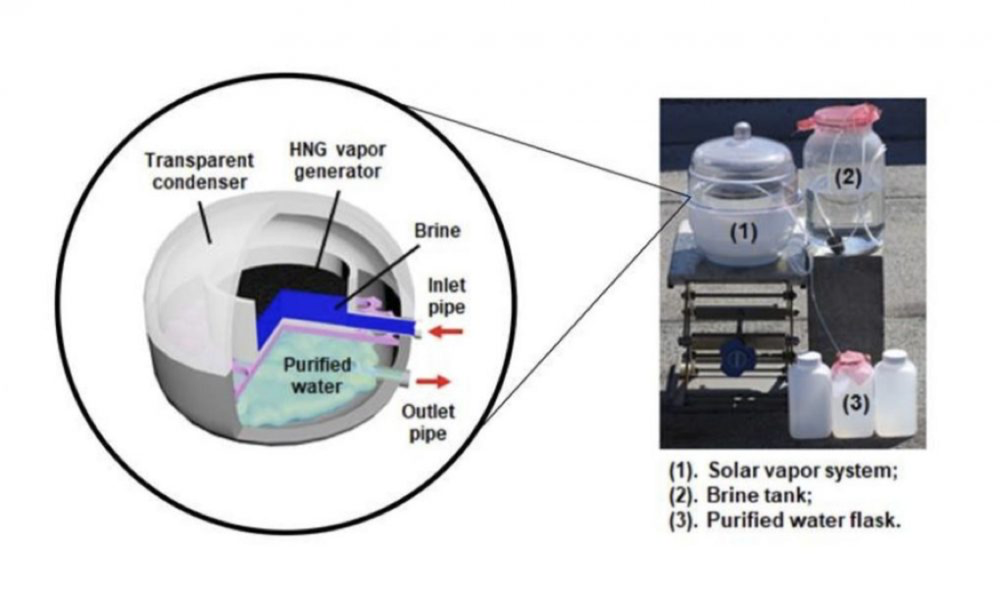

Billions of people around the world have limited or no access to clean drinking water. Significant shortages of clean water primarily occur in developing nations, while developed countries can face unanticipated water shortages after natural disasters such as hurricane ravaged Puerto Rico.
Guihua Yu and researchers at the University of Texas at Austin have created an innovative water purifier to produce clean water from any source. These researchers developed a cost-effective, compact technology based on gel-polymer materials. These hydrogels possess both hydrophilic qualities and solar-adsorbing properties.
Speaking on their discovery, Guihua Yu said, “We have essentially rewritten the entire approach to conventional solar water evaporation.”
Image courtesy UT at Austin
This new hydrogel-based solar vapor generator uses solar energy to create water vapor for condensation. Existing solar steaming technologies presently in use for treating saltwater tend to be very costly, however, this innovative hydrogel-based solar vapor generator desalinates water very economically. Fei Zhao, a researcher involved in this project, said, “Water desalination through distillation is a common method for mass production of freshwater. However, current distillation technologies, such as multi-stage flash and multi-effect distillation, require significant infrastructures and are quite energy intensive.”
Significantly, the University of Texas researchers tried hydrogels on water samples from the super salty Dead Sea. Remarkably, they achieved levels of purity that met accepted drinking water standards outlined by the World Health Organization and Environmental Protection Agency.
“Our outdoor tests showed daily distilled water production up to 25 liters per square meter, enough for household needs and even disaster areas,” said Guihua Yu. “Better still, the hydrogels can easily be retrofitted to replace the core components in most existing solar desalination systems, thereby eliminating the need for a complete overhaul of desalination systems already in use.”
Find more info here.
This innovative development looks like a paradigm changer to me.
What do you think?